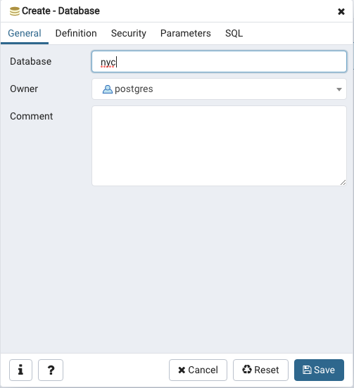
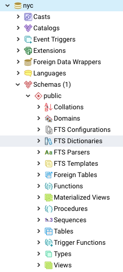
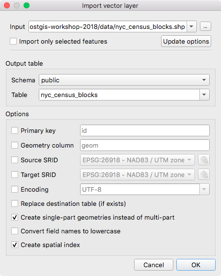

4. Setup Instructions¶
4.1. Installation¶
PostGIS is an extension for the PostgreSQL database to deal with spatial data, so in order to use it we first need an installation of the database engine. The following instructions will guide you using the PostGIS binary installers available from the official project site: https://postgis.net/install/. There are options for multiple platforms.
4.2. Creating a Spatial Database¶
4.2.1. PgAdmin¶
PostgreSQL has a number of administrative front-ends. The primary one is psql a command-line tool for entering SQL queries. Another popular PostgreSQL front-end is the free and open source graphical tool pgAdmin. All queries done in pgAdmin can also be done on the command line with psql.
Find pgAdmin and start it up. If it is the first time you are running it, it will ask you to set up a master password, this will allow you to log in to pgAdmin everytime and connect to servers.

Afterwards it will show you a list of servers. Click on Servers to view the active servers.

If this is the first time you have run pgAdmin, you should have a server entry for PostGIS (localhost:5432) already configured in pgAdmin. Click to display the databases in it.
The PostGIS database has been installed with unrestricted access for local users (users connecting from the same machine as the database is running). That means that it will accept any password you provide. If you need to connect from a remote computer, the password for the
postgresuser has been set topostgres.
4.2.2. Creating a Database¶
Open the Databases tree item and have a look at the available databases. The
postgresdatabase is the user database for the default postgres user. It is created in the initializationìnitdbas a new PostgreSQL database cluster. A database cluster is a collection of databases that are managed by a single server instance. Creating a database cluster consists of creating the directories in which the database data will live, generating the shared catalog tables (tables that belong to the whole cluster rather than to any particular database), and creating the template1 and postgres databases. When you later create a new database, everything in the template1 database is copied. Therefore, anything installed in template1 is automatically copied into each database created later. The postgres database is a default database meant for use by users, utilities and third party applications.Right-click on the
Databasesitem and selectNew Database.
Fill in the
New Databaseform as shown below and click OK.
Name nycOwner postgresSelect the new
nycdatabase and open it up to display the tree of objects. Where the parentnycis the database. The objects contained within it allow to understand the components of this database like showing the extisting CAST operators; Catalogs, where a relational database management system stores schema metadata, such as information about tables and columns, and internal bookkeeping information; Triggers; list the existing Extensions and create new ones through the pgAdmin interface; Foreign Data Wrappers for handling access to remote objects from external SQL databases; see the installed Procedural Languages to interact with the database; and the Schemas, a database contains one or more named schemas, which in turn contain tables. Once you select thepublicschema you’ll see the tree of objects.Click on the SQL query button indicated below (or go to Tools > Query Tool).

Enter the following query into the query text field to load the PostGIS spatial extension:
CREATE EXTENSION postgis;
Click the Execute button in the toolbar (or press F5) to “Execute the query.”
Now confirm that PostGIS is installed by running a PostGIS function:
SELECT postgis_full_version();
You have successfully created a PostGIS spatial database!!
4.2.3. Function List¶
PostGIS_Full_Version: Reports full PostGIS version and build configuration info.
4.3. Loading spatial data¶
Supported by a wide variety of libraries and applications, PostGIS provides many options for loading data. This section will focus on the basics – loading shapefiles using QGIS DB Manager.
QGIS is a free and open source geographic information system to create, edit, visualize, analyse and publish geospatial information. It’s available for multiple platforms: Windows, Mac, Linux, BSD. To get it, download the long term release (LTR) from the project website: https://qgis.org/en/site/forusers/download.html and follow the installation process. This tutorial was made using the version 3.4 (Madeira).
First, launch the QGIS software and navigate to the browser panel where you will find the PostGIS icon. Right click on it and select New Connection….

Fill in the connection details for the Authentication section and click on the Test Connection button. This will test the connection and report back if it works or not. If it is working, click the Ok button to create the connection.
Username postgresPassword postgresServer Host localhost5432Database nyc
Next, open the DB Manager browser from the menu Database > DB Manager… and select the postgis connection added in the previous step.

Then Click on Import Layer/File and navigate to the folder from the data bundle:\postgis-workshop-2018\data. Select the
nyc_census_blocks.shpfile and tick the checkboxes next to Create single-part geometries instead of multi-part and Create spatial index. Make sure the SRID value for the file is set to 26918 and the schema is set to public. Note that the primary key, geometry column, source SRID, target SRID and encoding are already filled in using the shapefile, but you can optionally change them (Don’t! There are steps later in the workshop that expect the default names.)
Destination Schema publicSRID 26918Destination Table nyc_census_blocksGeometry Column geomCreate single-part geometries instead of multi-part trueCreate spatial index trueClick the Ok button to create the table. It may take a few minutes to load, but this is the largest file in our data set.
Repeat the import process for the remaining shapefiles in the data directory:
nyc_streets.shpnyc_neighborhoods.shpnyc_subway_stations.shpnyc_homicides.shp
When all the files are loaded, click the “Refresh” button in pgAdmin to update the tree view. You should see your four tables show up in the Databases > nyc > Schemas > public > Tables section of the tree.

4.3.1. Shapefiles? What’s that?¶
You may be asking yourself – “What’s this shapefile thing?” A “shapefile” commonly refers to a collection of files with .shp, .shx, .dbf, and other extensions on a common prefix name (e.g., nyc_census_blocks). The actual shapefile relates specifically to files with the .shp extension. However, the .shp file alone is incomplete for distribution without the required supporting files.
Mandatory files:
.shp—shape format; the feature geometry itself.shx—shape index format; a positional index of the feature geometry.dbf—attribute format; columnar attributes for each shape, in dBase III
Optional files include:
.prj—projection format; the coordinate system and projection information, a plain text file describing the projection using well-known text format
The Db Manager importer makes shape data usable in PostGIS by converting it from binary data into a series of SQL commands that are then run in the database to load the data.
4.3.2. SRID 26918? What’s with that?¶
Most of the import process is self-explanatory, but even experienced GIS professionals can trip over an SRID.
An “SRID” stands for “Spatial Reference IDentifier.” It defines all the parameters of our data’s geographic coordinate system and projection. An SRID is convenient because it packs all the information about a map projection (which can be quite complex) into a single number.
You can see the definition of our workshop map projection by looking it up either in an online database,
or directly inside PostGIS with a query to the spatial_ref_sys table.
SELECT srtext FROM spatial_ref_sys WHERE srid = 26918;
Note
The PostGIS spatial_ref_sys table is an OGC-standard table that defines all the spatial reference systems known to the database. The data shipped with PostGIS, lists over 3000 known spatial reference systems and details needed to transform/re-project between them.
In both cases, you see a textual representation of the 26918 spatial reference system (pretty-printed here for clarity):
PROJCS["NAD83 / UTM zone 18N",
GEOGCS["NAD83",
DATUM["North_American_Datum_1983",
SPHEROID["GRS 1980",6378137,298.257222101,AUTHORITY["EPSG","7019"]],
AUTHORITY["EPSG","6269"]],
PRIMEM["Greenwich",0,AUTHORITY["EPSG","8901"]],
UNIT["degree",0.01745329251994328,AUTHORITY["EPSG","9122"]],
AUTHORITY["EPSG","4269"]],
UNIT["metre",1,AUTHORITY["EPSG","9001"]],
PROJECTION["Transverse_Mercator"],
PARAMETER["latitude_of_origin",0],
PARAMETER["central_meridian",-75],
PARAMETER["scale_factor",0.9996],
PARAMETER["false_easting",500000],
PARAMETER["false_northing",0],
AUTHORITY["EPSG","26918"],
AXIS["Easting",EAST],
AXIS["Northing",NORTH]]
If you open up the nyc_neighborhoods.prj file from the data directory, you’ll see the same projection definition.
A common problem for people getting started with PostGIS is figuring out what SRID number to use for their data. All they have is a .prj file. But how do humans translate a .prj file into the correct SRID number?
The easy answer is to use a computer. Plug the contents of the .prj file into http://prj2epsg.org. This will give you the number (or a list of numbers) that most closely match your projection definition. There aren’t numbers for every map projection in the world, but most common ones are contained within the prj2epsg database of standard numbers.

Data you receive from local agencies—such as New York City—will usually be in a local projection noted by “state plane” or “UTM”. Our projection is “Universal Transverse Mercator (UTM) Zone 18 North” or EPSG:26918.
4.3.3. Things to Try: View data using QGIS¶
You can use QGIS for quickly looking at data too. You can view a number of data formats including flat shapefiles and a PostGIS database. Its graphical interface allows for easy exploration of your data, as well as simple testing and fast styling.
To view the imported data, click on the connection in the left panel and Double-click on the tables created to add them to the map.

Footnotes
| [1] | “Chapter 2.5. Installation” PostGIS Documentation |
4.4. About our data¶
The data for this workshop is four shapefiles for New York City, and one attribute table of sociodemographic variables. We’ve loaded our shapefiles as PostGIS tables and will add sociodemographic data later in the workshop.
The following describes the number of records and table attributes for each of our datasets. These attribute values and relationships are fundamental to our future analysis.
To explore the nature of your tables in pgAdmin, right-click a highlighted table and select Properties. You will find a summary of table properties, including a list of table attributes within the Columns tab.
4.4.1. nyc_census_blocks¶
A census block is the smallest geography for which census data is reported. All higher level census geographies (block groups, tracts, metro areas, counties, etc) can be built from unions of census blocks. We have attached some demographic data to our collection of blocks.
Number of records: 36592
| blkid | A 15-digit code that uniquely identifies every census block. Eg: 360050001009000 |
| popn_total | Total number of people in the census block |
| popn_white | Number of people self-identifying as “White” in the block |
| popn_black | Number of people self-identifying as “Black” in the block |
| popn_nativ | Number of people self-identifying as “Native American” in the block |
| popn_asian | Number of people self-identifying as “Asian” in the block |
| popn_other | Number of people self-identifying with other categories in the block |
| boroname | Name of the New York borough. Manhattan, The Bronx, Brooklyn, Staten Island, Queens |
| geom | Polygon boundary of the block |

Black population as a percentage of Total Population
Note
To get census data into GIS, you need to join two pieces of information: the actual data (text), and the boundary files (spatial). There are many options for getting the data, including downloading data and boundaries from the Census Bureau’s American FactFinder.
4.4.2. nyc_neighborhoods¶
New York has a rich history of neighborhood names and extent. Neighborhoods are social constructs that do not follow lines laid down by the government. For example, the Brooklyn neighborhoods of Carroll Gardens, Red Hook, and Cobble Hill were once collectively known as “South Brooklyn.” And now, depending on which real estate agent you talk to, the same four blocks in the-neighborhood-formerly-known-as-Red-Hook can be referred to as Columbia Heights, Carroll Gardens West, or Red Hook!
Number of records: 129
| name | Name of the neighborhood |
| boroname | Name of the New York borough. Manhattan, The Bronx, Brooklyn, Staten Island, Queens |
| geom | Polygon boundary of the neighborhood |

The neighborhoods of New York City
4.4.3. nyc_streets¶
The street centerlines form the transportation network of the city. These streets have been flagged with types in order to distinguish between such thoroughfares as back alleys, arterial streets, freeways, and smaller streets. Desirable areas to live might be on residential streets rather than next to a freeway.
Number of records: 19091
| name | Name of the street |
| oneway | Is the street one-way? “yes” = yes, “” = no |
| type | Road type (primary, secondary, residential, motorway) |
| geom | Linear centerline of the street |

The streets of New York City. Major roads are in red.
4.4.4. nyc_subway_stations¶
The subway stations link the upper world where people live to the invisible network of subways beneath. As portals to the public transportation system, station locations help determine how easy it is for different people to enter the subway system.
Number of records: 491
| name | Name of the station |
| borough | Name of the New York borough. Manhattan, The Bronx, Brooklyn, Staten Island, Queens |
| routes | Subway lines that run through this station |
| transfers | Lines you can transfer to via this station |
| express | Stations where express trains stop, “express” = yes, “” = no |
| geom | Point location of the station |

Point locations for New York City subway stations
4.4.5. nyc_census_sociodata¶
There is a rich collection of social-economic data collected during the census process, but only at the larger geography level of census tract. Census blocks combine to form census tracts (and block groups). We have collected some social-economic at a census tract level to answer some of these more interesting questions about New York City.
Note
The nyc_census_sociodata is a data table. We will need to connect it to Census geographies before conducting any spatial analysis.
| tractid | An 11-digit code that uniquely identifies every census tract. (“36005000100”) |
| transit_total | Number of workers in the tract |
| transit_private | Number of workers in the tract who use private automobiles / motorcycles |
| transit_public | Number of workers in the tract who take public transit |
| transit_walk | Number of workers in the tract who walk |
| transit_other | Number of workers in the tract who use other forms like walking / biking |
| transit_none | Number of workers in the tract who work from home |
| transit_time_mins | Total number of minutes spent in transit by all workers in the tract (minutes) |
| family_count | Number of families in the tract |
| family_income_median | Median family income in the tract (dollars) |
| family_income_mean | Average family income in the tract (dollars) |
| family_income_aggregate | Total income of all families in the tract (dollars) |
| edu_total | Number of people with educational history |
| edu_no_highschool_dipl | Number of people with no high school diploma |
| edu_highschool_dipl | Number of people with high school diploma and no further education |
| edu_college_dipl | Number of people with college diploma and no further education |
| edu_graduate_dipl | Number of people with graduate school diploma |